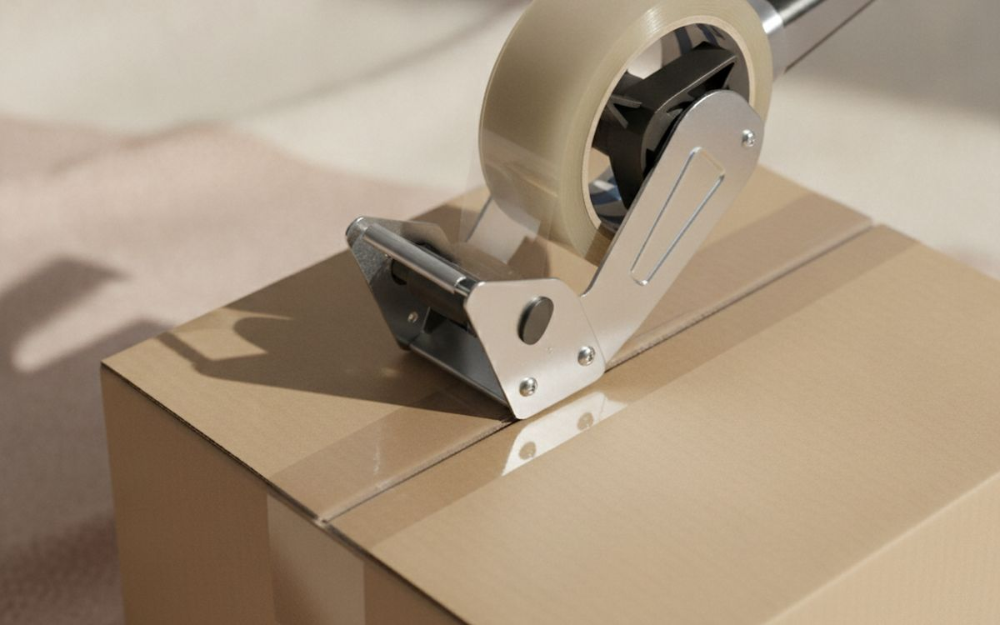
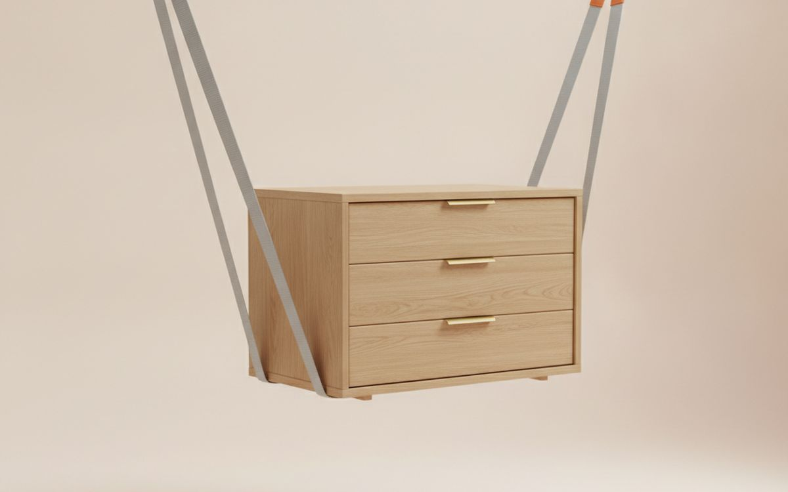
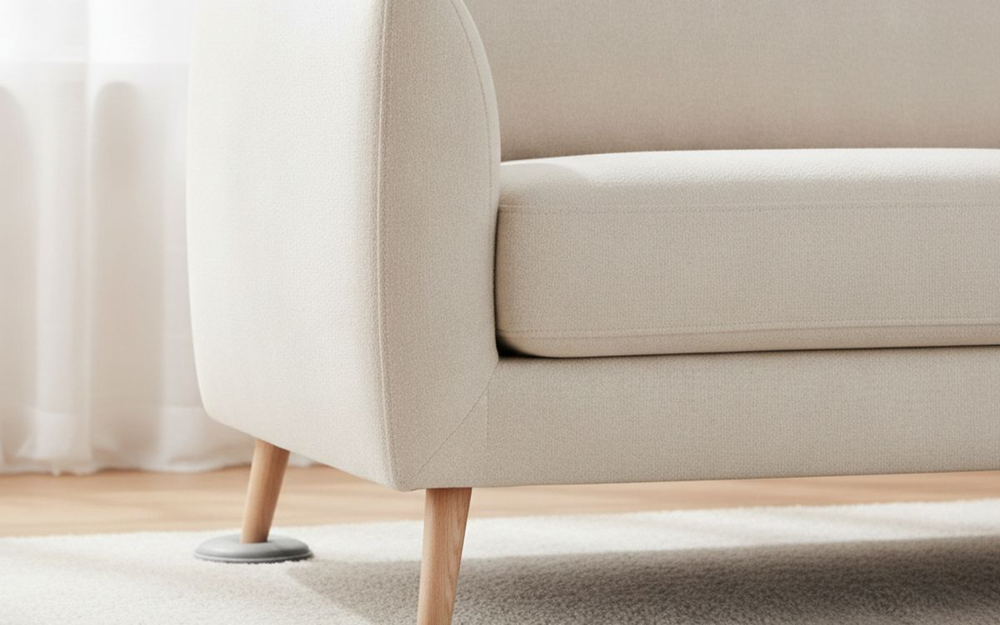
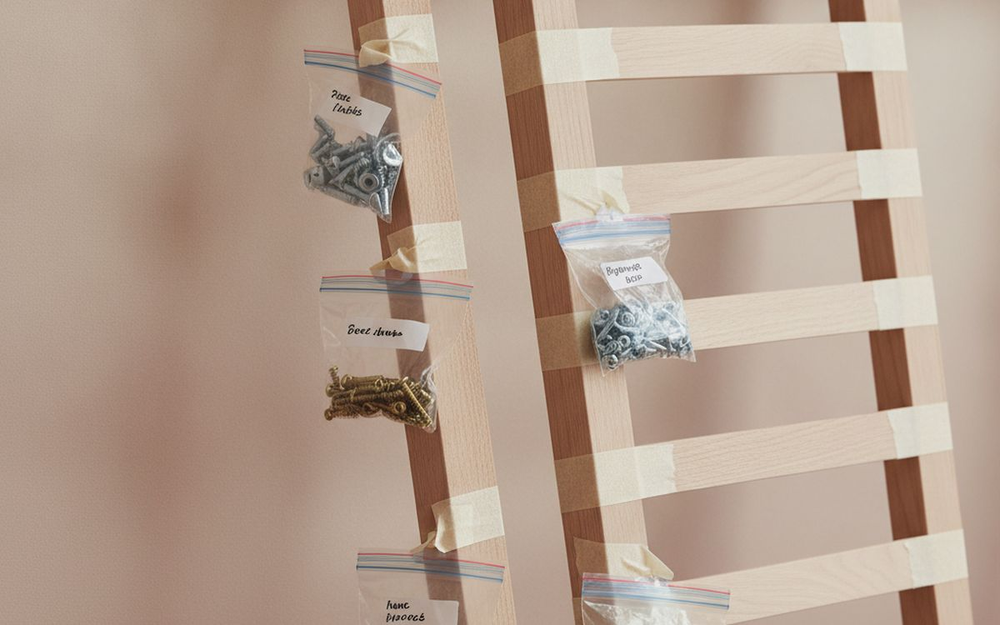
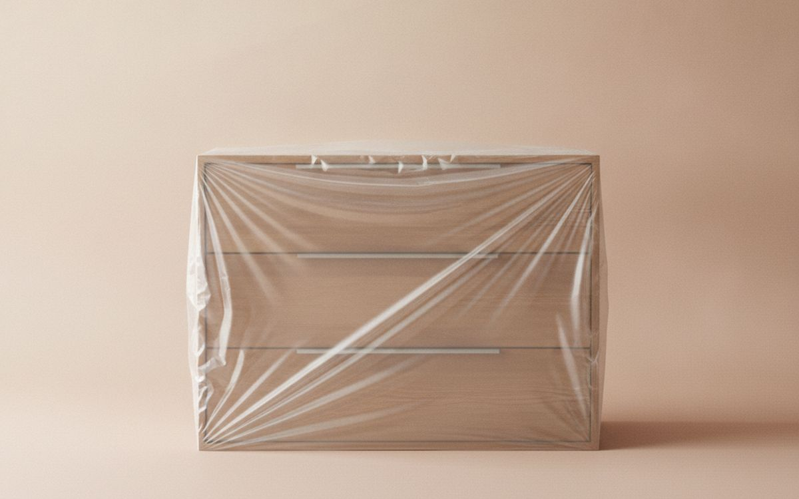
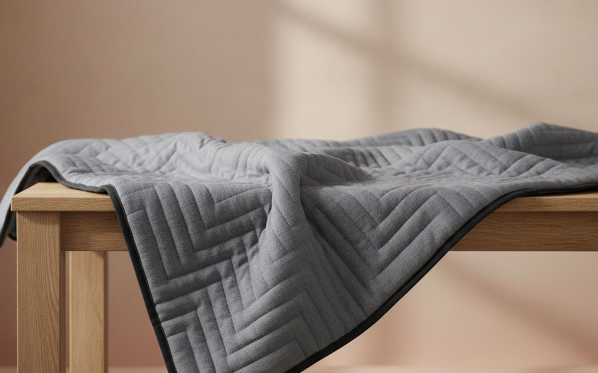
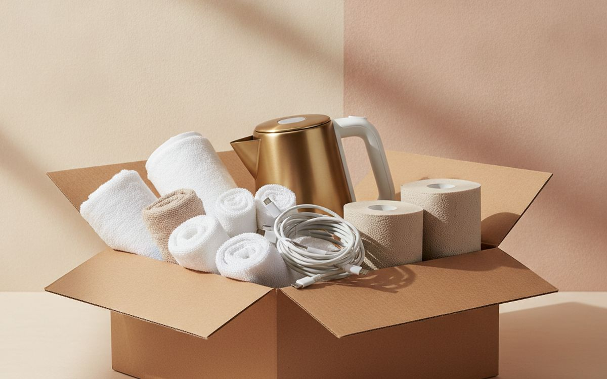

Moving is where cheap shortcuts cost the most. Free supermarket boxes collapse under books, one roll of bad tape runs out at midnight, and the screws for the bed frame vanish somewhere between two apartments. Most of the pain on moving day comes from a handful of small, cheap things you did not buy.
This list is ordered by what each item saves: time, back strain, damage and the misery of the first night in a new place. Nothing here is expensive, and several items get used again long after the move.
Prices below are approximate street prices at the time of writing and move around constantly, especially during sale events. Treat them as a rough band for budgeting, not a quote. Always check the live listing before you buy.
Με λίγα λόγια
A tape gun and good packing tape
The tool that saves the most time
Γνωστοποίηση. Οι σύνδεσμοι σε αυτή τη σελίδα είναι συνδεδεμένοι. Αν αγοράσετε μέσω κάποιου, ενδέχεται να λάβουμε προμήθεια χωρίς επιπλέον κόστος για εσάς. Δεν επηρεάζει το τι μπαίνει στη λίστα ούτε τη σειρά της.
Πώς επιλέξαμε
These picks come from professional movers' advice, consumer testing and long-run owner reports, cross-checked against current retail listings. We have not personally tested every item here. We left out gadgets that sound clever but add work, and focused on what gets used on every single move.
Με μια ματιά
Οι τιμές είναι ενδεικτικές κατά τη συγγραφή και αλλάζουν συχνά.
Οι επιλογές

01 · The tool that saves the most timeA tape gun and good packing tape
Taping boxes by hand is slow, the tape sticks to itself and you lose the end every few minutes. A tape gun seals a box in two seconds and cuts cleanly. Pair it with proper acrylic or hot-melt packing tape, not the thin cheap rolls that peel off cardboard. Buy more tape than you think you need; running out late at night is a rite of passage you can skip. The case for it: seals boxes in seconds, clean, strong seams, and used for every box. The trade-off is real: cheap guns jam and lose their grip and the blade is sharp; keep it away from kids, so weigh that against how often it would actually get used.
$15-30Ο συμβιβασμός: Cheap guns jam and lose their grip
Γιατί είναι εδώ
- Seals boxes in seconds
- Clean, strong seams
- Used for every box
Αξίζει να ξέρετε
- Cheap guns jam and lose their grip
- The blade is sharp; keep it away from kids
02 · Boxes that survive the vanProper moving boxes in two or three sizes
Free boxes are uneven sizes and often weak, so stacks lean and collapse. Buying boxes in two or three standard sizes makes the van easier to load and keeps heavy things in small boxes. Put books in small boxes, linens in large ones. Double-wall boxes are worth it for kitchenware. Many movers resell used boxes cheaply, which is a good middle ground. The case for it: stack neatly and safely, stronger for heavy items, and standard sizes load faster. The trade-off is real: a real cost compared with free boxes and oversized boxes get too heavy to lift, so weigh that against how often it would actually get used.
$30-80Ο συμβιβασμός: A real cost compared with free boxes
Γιατί είναι εδώ
- Stack neatly and safely
- Stronger for heavy items
- Standard sizes load faster
Αξίζει να ξέρετε
- A real cost compared with free boxes
- Oversized boxes get too heavy to lift

03 · Heavy furnitureMoving straps or a forearm lifting strap
Lifting straps let two people carry a dresser or washing machine using their legs and shoulders rather than their fingers and backs. They take some practice and work best on flat ground, but they make awkward heavy items far easier to handle. They are useless on steep stairs for the person at the bottom, so plan the route first. The case for it: uses legs and shoulders, not fingers, makes heavy items manageable, and cheap and light. The trade-off is real: awkward on stairs and both people need similar height, so weigh that against how often it would actually get used.
$15-30Ο συμβιβασμός: Awkward on stairs
Γιατί είναι εδώ
- Uses legs and shoulders, not fingers
- Makes heavy items manageable
- Cheap and light
Αξίζει να ξέρετε
- Awkward on stairs
- Both people need similar height
04 · Stacks of boxes and appliancesA folding hand truck
One trip with a hand truck moves four boxes that would otherwise take four trips. A folding model tucks into a closet after the move and comes out for groceries, bins and parcels. Choose one with solid or pneumatic wheels that handle kerbs, and a load rating well above what you plan to carry. The case for it: cuts trips dramatically, useful long after the move, and folds away small. The trade-off is real: small wheels struggle on gravel and kerbs and cheap plastic ones bend under load, so weigh that against how often it would actually get used.
$40-90Ο συμβιβασμός: Small wheels struggle on gravel and kerbs
Γιατί είναι εδώ
- Cuts trips dramatically
- Useful long after the move
- Folds away small
Αξίζει να ξέρετε
- Small wheels struggle on gravel and kerbs
- Cheap plastic ones bend under load

05 · Moving heavy things across floorsFurniture sliders
Sliders go under the legs of a sofa or wardrobe and let one person push it across the room. Use felt sliders on hard floors and plastic ones on carpet. They protect the floors in both homes and save your deposit. You will also use them every time you rearrange a room. The case for it: one person can shift heavy furniture, protects floors, and reusable forever. The trade-off is real: wrong type for the floor can scratch and no help on stairs, so weigh that against how often it would actually get used.
$10-20Ο συμβιβασμός: Wrong type for the floor can scratch
Γιατί είναι εδώ
- One person can shift heavy furniture
- Protects floors
- Reusable forever
Αξίζει να ξέρετε
- Wrong type for the floor can scratch
- No help on stairs

06 · Screws, bolts and remotesSmall zip bags and a marker
Every flat-pack piece you take apart leaves a pile of screws that will be gone by morning. Put them in a small bag, write what they belong to, and tape the bag to the largest part of that furniture. Do the same with remote controls and their devices. It costs almost nothing and saves the most frustrating hour of the move. The case for it: no lost hardware, makes reassembly fast, and nearly free. The trade-off is real: only works if you are disciplined about it and tape on painted surfaces can lift finish, so weigh that against how often it would actually get used.
$8-15Ο συμβιβασμός: Only works if you are disciplined about it
Γιατί είναι εδώ
- No lost hardware
- Makes reassembly fast
- Nearly free
Αξίζει να ξέρετε
- Only works if you are disciplined about it
- Tape on painted surfaces can lift finish

07 · Drawers, doors and loose partsStretch wrap
Stretch wrap holds drawers shut, keeps doors from swinging and bundles loose items like broom handles together. It sticks to itself, not to furniture, so it leaves no residue. Wrap mattresses and sofas to keep them clean in the van. A small handled roll is easier than a big industrial one. The case for it: keeps drawers and doors closed, protects upholstery from dirt, and leaves no residue. The trade-off is real: single-use plastic and can trap moisture on wood if left long, so weigh that against how often it would actually get used.
$15-25Ο συμβιβασμός: Single-use plastic
Γιατί είναι εδώ
- Keeps drawers and doors closed
- Protects upholstery from dirt
- Leaves no residue
Αξίζει να ξέρετε
- Single-use plastic
- Can trap moisture on wood if left long

08 · Furniture that scratchesMoving blankets
Wooden furniture rubs against everything in a van. Thick moving blankets wrapped around tables, dressers and TVs prevent scratches and dents. Buy a pack of cheap ones or borrow from a friend. Afterwards they make good covers for storage, car boots and garage floors. The case for it: prevents scratches and dents, reusable for storage and cars, and cheap in packs. The trade-off is real: bulky to store and need tape or wrap to stay on, so weigh that against how often it would actually get used. For $20-45, it is a small, low-risk addition to the list rather than a centrepiece purchase you need to think hard about.
$20-45Ο συμβιβασμός: Bulky to store
Γιατί είναι εδώ
- Prevents scratches and dents
- Reusable for storage and cars
- Cheap in packs
Αξίζει να ξέρετε
- Bulky to store
- Need tape or wrap to stay on
09 · Boxes ending up in the right roomColour-coded labels
Give each room a colour, label boxes on two sides, and put the matching colour on each room's door in the new place. Helpers and movers put boxes in the right room without asking. Add a number to each box and keep a short list, so you know when something is missing. The case for it: boxes land in the right room, helpers need no directions, and easy to spot a missing box. The trade-off is real: only as good as your consistency and label two sides, not the top, so weigh that against how often it would actually get used.
$8-15Ο συμβιβασμός: Only as good as your consistency
Γιατί είναι εδώ
- Boxes land in the right room
- Helpers need no directions
- Easy to spot a missing box
Αξίζει να ξέρετε
- Only as good as your consistency
- Label two sides, not the top

10 · Arriving to a working homeA first-night box
Pack one box that travels with you, not in the van: bedding, a towel, toilet paper, phone chargers, basic tools, a kettle or coffee maker, medications, snacks, and a light bulb. On the first night, you will not have to open twenty boxes to find a toothbrush. This costs nothing and is the thing people most wish they had done. The case for it: makes the first night comfortable, no hunting through boxes, and nearly free. The trade-off is real: takes some planning ahead and keep it out of the van, so weigh that against how often it would actually get used.
$0-30Ο συμβιβασμός: Takes some planning ahead
Γιατί είναι εδώ
- Makes the first night comfortable
- No hunting through boxes
- Nearly free
Αξίζει να ξέρετε
- Takes some planning ahead
- Keep it out of the van
Συχνές ερωτήσεις
How many boxes do I need?
A rough guide is 20-30 boxes for a one-bedroom apartment and 40-60 for a two or three bedroom home, but it varies with how many books and kitchen items you own.
Are free boxes good enough?
For light things, yes. For books, dishes and anything heavy, proper boxes are safer and stack better.
What should I pack first?
Things you will not need for weeks: off-season clothes, books, decorations. Kitchen and bathroom go last.
Do I need bubble wrap?
Towels, clothes and linens protect most fragile items for free. Use bubble wrap or paper for glassware and electronics.
Οι προσφορές σήμερα
Δείτε τι είναι σε έκπτωση αυτή τη στιγμή.
Προσφορές →← Όλοι οι οδηγοί
Ως συνεργάτες της AliExpress, κερδίζουμε από επιλέξιμες αγορές. Οι τιμές και η διαθεσιμότητα ισχύουν κατά την ημερομηνία δημοσίευσης και ενδέχεται να αλλάξουν.